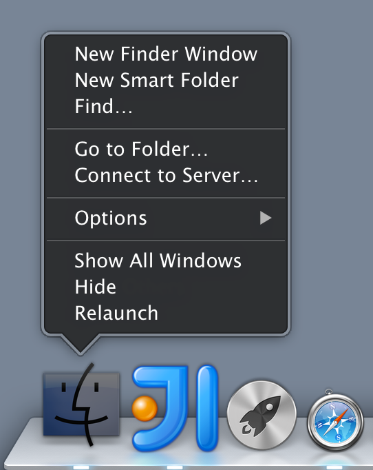
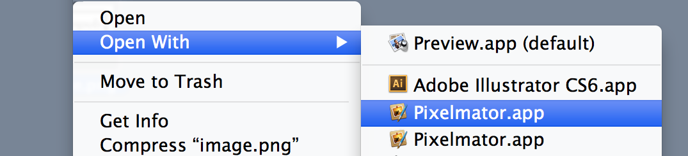
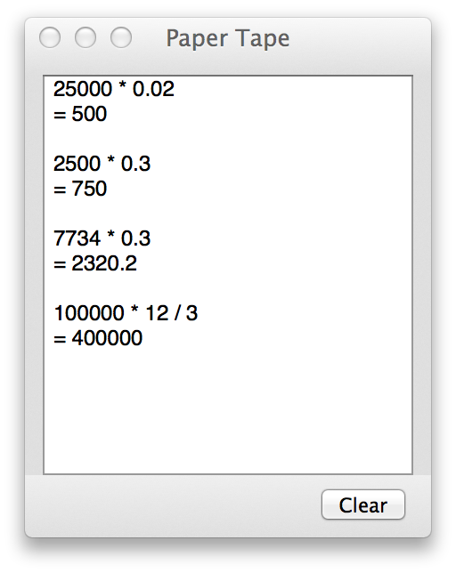

- Show hidden files and folders in Finder
- Show hidden files and folders from an application’s Open dialog
- Remove Duplicate Entries in ‘Open With’ Menu
- Show your workings with Calculator
Show hidden files and folders in Finder

From a terminal window
|
Then relaunch Finder with Option ( ) + Right Click,
) + Right Click, Relaunch. Switch back using NO.
Show hidden files and folders from an application’s Open dialog
When you’ve got the dialog open, just hit Command ( ) + Shift (
) + Shift ( ) +
) + . to toggle. Nice.
Remove Duplicate Entries in ‘Open With’ Menu
Remove duplicate entries from the terminal window.

|
Show your Workings with Calculator
Hitting Command () + T in the Calculator app shows the paper tape so you can see you past calculations!
